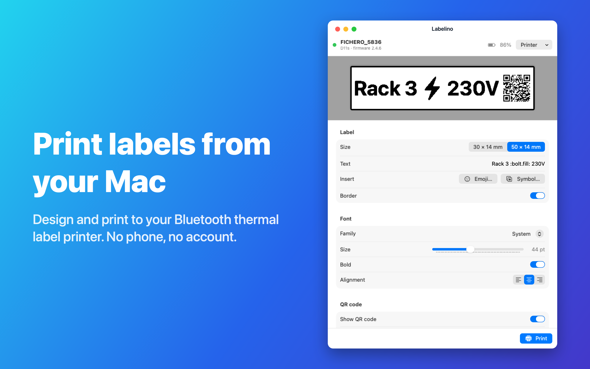

Labelino
Print labels from your Mac to a Bluetooth thermal label printer.

Compatible printers
- Fichero D11s (sold by Action) – tested.
- AiYin D11s – the same printer under its manufacturer’s name.
- AiYin D12 – same printer family and protocol; expected to work.
Other Fichero models (such as the Fichero 3561, 4575, 4437 and the A4 model 6181) use a different protocol and are not supported yet. Labels: 14 mm wide, 30 mm or 50 mm long, with gaps between labels.
Getting started
- Switch the printer on. Make sure it isn’t connected to your phone’s app, because it accepts one connection at a time.
- Open Labelino and click Connect. Allow Bluetooth access when macOS asks, then pick your printer from the list. If you see more than one, the strongest signal is usually the one next to you.
- Pick the label size, type your text and click Print (⌘P).
Labelino remembers your printer and reconnects automatically next time. Use Printer → Forget This Printer to switch to another one.
Troubleshooting
- “No compatible printer found”: switch the printer off and on, and close the printer app on your phone or any other app connected to it. A connected printer is invisible to other devices.
- “Bluetooth is off or not allowed”: turn Bluetooth on and allow Labelino in System Settings → Privacy & Security → Bluetooth.
- Print is too light: set Darkness to Dark.
- QR code warning: the content is too long to stay scannable on a 14 mm label. Use a shorter link.
Contact
Questions or problems? Email 2ndchatapp@gmail.com.